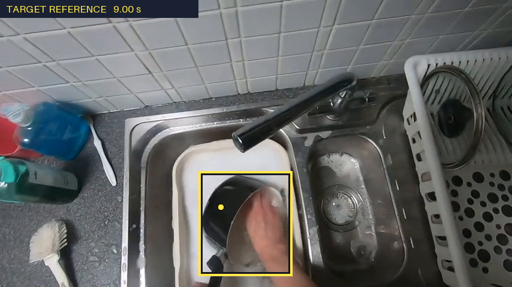

碰撞 · impact1.78 – 1.96 s
置信度 0.76
打开 MP4A/V REVIEW · 本地复核
B-Q1 · 器具声事件
30.32 秒 · 16 条事件 · 自动判断，供复核

指定器具
手持的黑色锅体
指示帧 9.00 s · 标记不代表有声
请选择一个事件
事件列表
碰撞 · impact3.44 – 4.00 s
置信度 0.72
打开 MP4碰撞 · impact4.57 – 4.80 s
置信度 0.70
打开 MP4摩擦 · friction5.01 – 5.44 s
置信度 0.68
打开 MP4摩擦 · friction11.52 – 12.95 s
置信度 0.93
打开 MP4摩擦 · friction13.81 – 14.62 s
置信度 0.92
打开 MP4碰撞 · impact16.06 – 16.15 s
置信度 0.78
打开 MP4摩擦 · friction16.39 – 16.98 s
置信度 0.74
打开 MP4碰撞 · impact18.32 – 18.45 s
置信度 0.67
打开 MP4摩擦 · friction20.85 – 22.16 s
置信度 0.74
打开 MP4碰撞 · impact22.73 – 22.85 s
置信度 0.69
打开 MP4摩擦 · friction24.02 – 24.36 s
置信度 0.82
打开 MP4摩擦 · friction25.39 – 26.60 s
置信度 0.93
打开 MP4碰撞 · impact25.40 – 25.51 s
置信度 0.81
打开 MP4碰撞 · impact26.73 – 26.88 s
置信度 0.71
打开 MP4摩擦 · friction27.13 – 27.66 s
置信度 0.85
打开 MP4